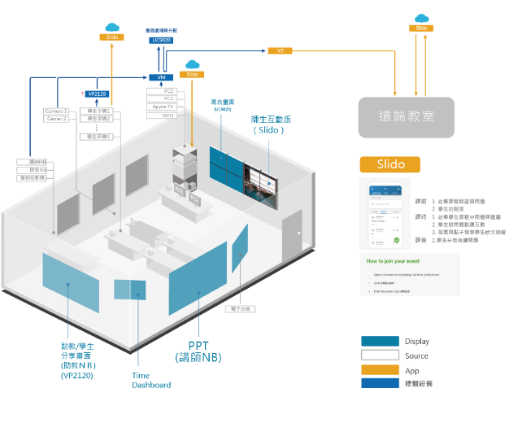

2019 - 2020
情境研究 / 情境設計與規劃 / 控制系統UI設計
隨著科技的進步，教學場域越來越多樣化，公司藉由此專案，除了滿足教師的使用用途之外，希望也能成為公司推出的未來教室解決方案指標。 定義使用情境，協助系統工程師規劃設備，整合軟硬應用提出新的解決體驗，並完成控制介面UI設計。
隨著科技的進步與資訊的爆炸，教學與知識傳遞方式越來越多樣化，教學現場從傳統的單向的知識內容傳遞，慢慢變成了多點的思想互動。
而隨著教室的現場會越來多的互動與傳遞方式，而延生出越來越多的設備與軟體介面，這對於教師與教室管理者皆是一種新的挑戰。
公司藉由此專案，除了滿足教師的使用用途之外，希望也能成為公司推出的未來教室解決方案指標。
而我們希望能透過公司基礎設備完成快速、高品質地連接，讓實體互動能無門檻地數位化，並透過控制系統的帶來的體驗完成自由地分配與控制所有設備，以降低操作的學習難度，消除設備與師、生之間的高牆，並結合更多第三方軟體應用，達到能跨空間互動的無邊界教室。
透過與教室使用教師的訪談，定義出使用的各種情境與使用旅途，並與透過Workshop形式，發展符合使用需求的新的應用方式，定義「ATEN Future Training」
隨配合公司的解決方案與系統規劃師討論出符合新潮流的數位未來教室與即使用情境的系統解決方案。
針對大多數講師的傳統教案，除了新增能及時完成綠影、遠近端同時觀看課程，也增加新的交流方式，降低老師與學生的交流門檻，使羞於發言學員的互動、統合學生意見、遠端學員互動等等情境能完成，讓傳統上課方式產生更多交流與知識碰撞。
完成可以遠近端同時協作的情境，包含小組討論、Workshop、Open Space Technology、遠端協作等等。
使用3D形式整合教室現場多達15面不同螢幕以及21個訊號來源，多種設備操作整合成特定情境，已讓教師能快速使用。